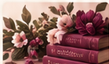
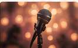

Experiência literária
Encontros literários
Conversas, leituras e trocas em torno da produção literária.
Quero saber maisAs atividades do projeto são caminhos para que cada integrante apresente sua arte, desenvolva sua produção literária e amplie seu alcance.
Os formatos abaixo correspondem às formas de criação e encontro previstas na proposta do projeto.
Conversas, leituras e trocas em torno da produção literária.
Quero saber mais
Experiências coletivas de leitura, interpretação e diálogo.
Quero saber maisEspaços de desenvolvimento da escrita e da produção literária.
Quero saber mais
Encontros voltados à apresentação e circulação de novas obras.
Quero saber maisCriação coletiva e iniciativas que ampliam o alcance das produções.
Quero saber maisVocê pode chegar como autora, leitora, apreciadora da literatura ou pessoa interessada em colaborar com uma iniciativa cultural. A página de conexão transforma essa intenção em uma conversa direta.